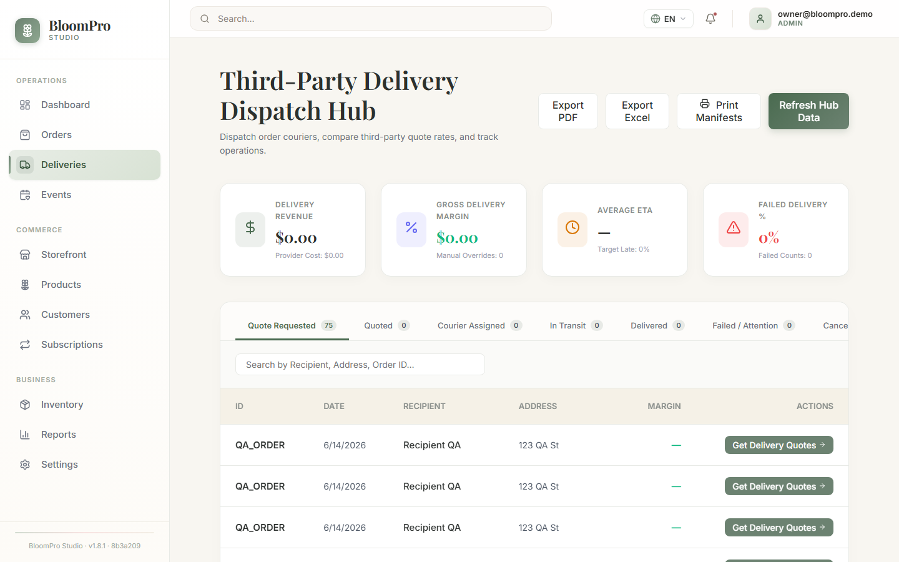
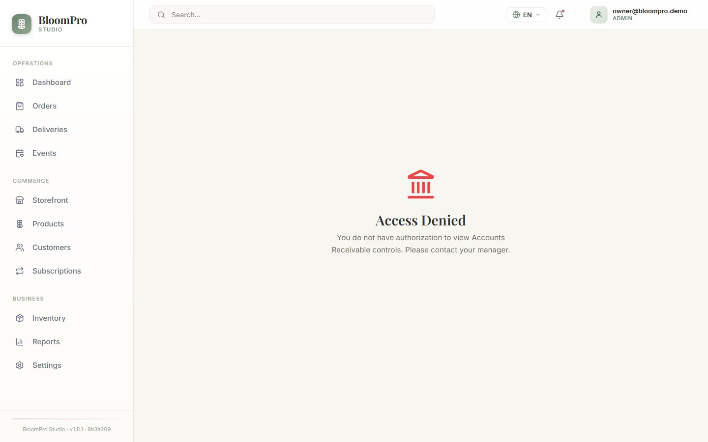
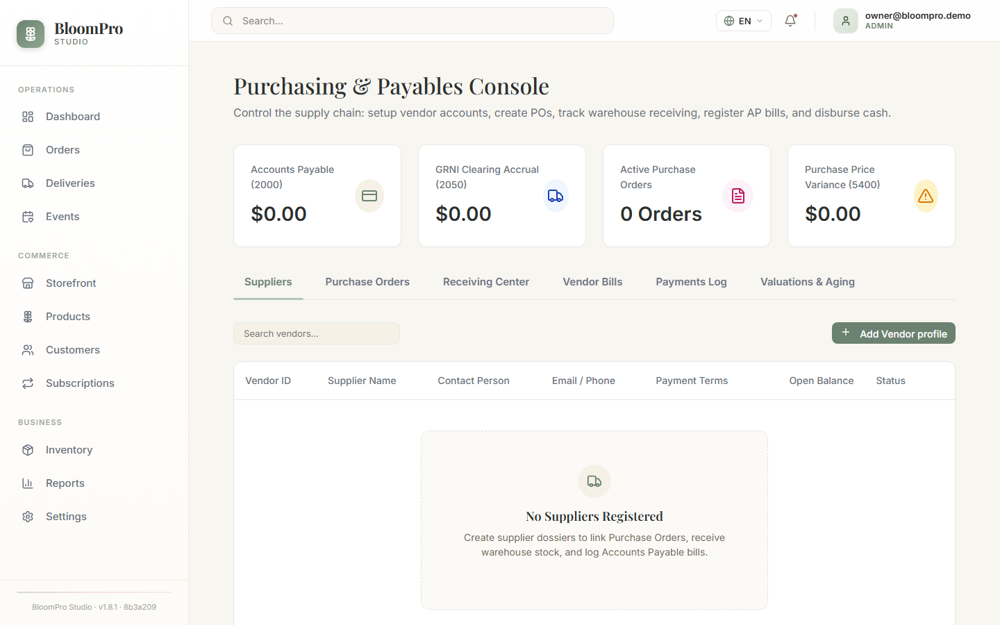
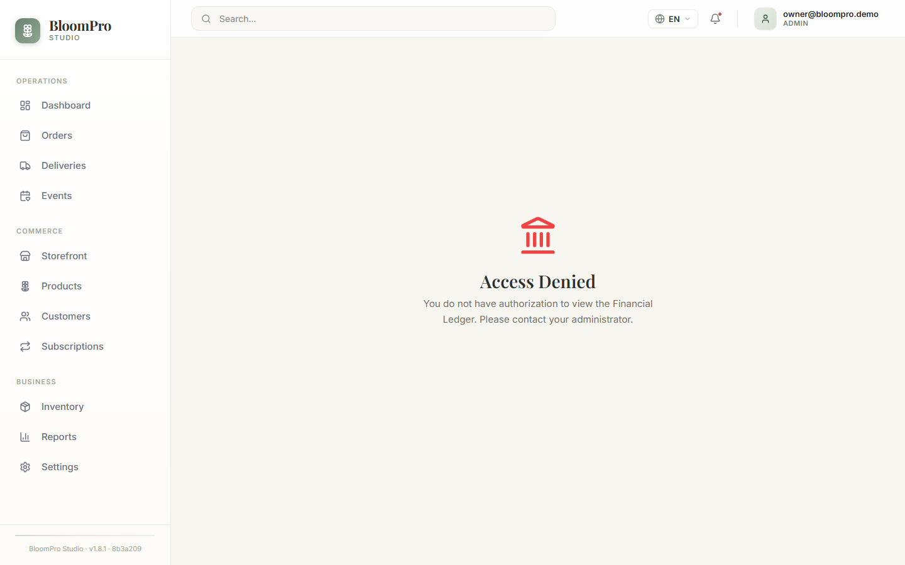
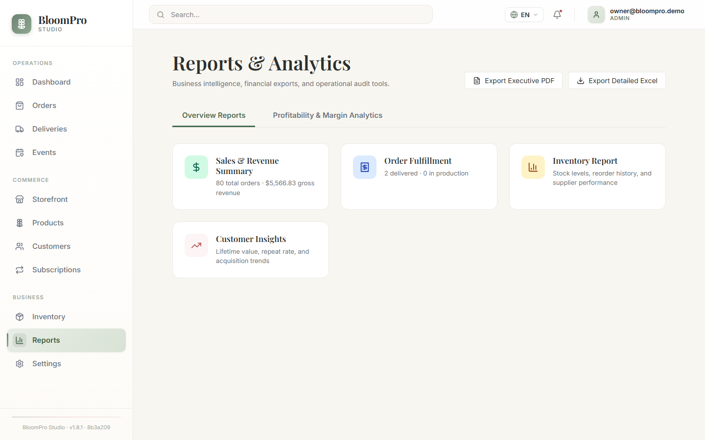
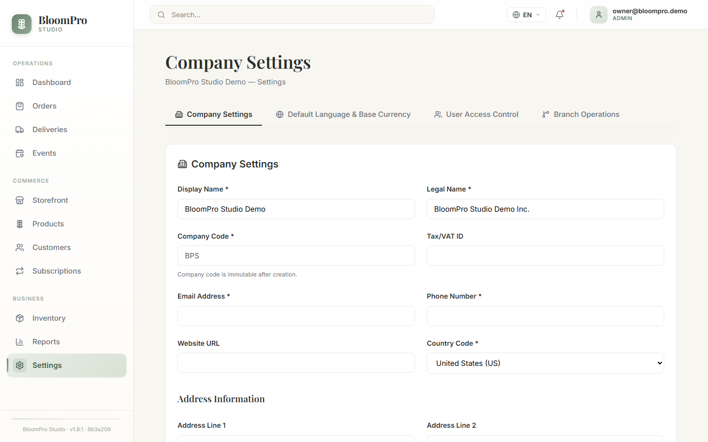

09
DESIGNER & PRODUCTION WORKFLOW
From confirmed order to finished arrangement.
Overview
Production lives on the Dashboard → Today's Operations panel. The production queue lists confirmed work; the urgent list surfaces today's deliveries and high-priority orders with a single Resolve Status action that always moves the order to its next stage.
Start and finish production
- Open Dashboard and review the production queue and urgent list.
- Select Resolve Status on a confirmed order — it moves to In Design. The designer builds the arrangement.
- Select Resolve Status again — the order becomes Ready and waits in the cooler for dispatch.
WHAT HAPPENS NEXTEach move is saved immediately, stamped in the order's audit history, and reflected everywhere — the Orders pipeline filters, the dashboard counts, and the delivery queue.
A production morning
8:00 — Three arrangements due today. The urgent list shows all three. 8:05 — First order to In Design; roses from the cooler. 8:40 — Marked Ready. The next order starts. By 10:30 all three sit in the cooler as Ready, and dispatch takes over.
TIPThe Resolve Status button disables itself while a change is saving — one click is always enough.
10
READY & DELIVERY OPERATIONS
Dispatch, out-for-delivery, and completing the drop.
Overview
The Deliveries module manages dispatch details — couriers, routes, delivery notes, and proof of delivery — while status moves can be made from the Dashboard or the Orders list.

Deliveries: courier assignment, dispatch details, and delivery status in one place.
Dispatch and complete a delivery
- From the Dashboard urgent list, select Resolve Status on a Ready order — it becomes Out for Delivery. Assign the driver if not already assigned.
- When the flowers are in the recipient's hands, mark the order Delivered.
WHAT HAPPENS NEXTDelivered stamps the delivery time, records the order's cost of goods against your inventory (Chapter 15), and finishes the lifecycle.
IMPORTANTDelivery completion is blocked while the order has a remaining balance. Record the payment first (Chapter 11), then deliver. The block message states the outstanding amount.
BEST PRACTICEAssign drivers at dispatch, not after. The driver name on the order is what makes tomorrow's "who delivered this?" question answerable in seconds.
11
PAYMENTS & ACCOUNTS RECEIVABLE
Record money in, track balances, manage collections.
Overview
Use this module when… a customer pays a deposit · you receive final payment before delivery · reviewing who owes what · working collections on overdue balances.

Receivables: open balances by customer, payment recording, and allocation to orders.
Record a payment
- Open Receivables.
- Find the customer and record the payment amount and method.
- Allocate the payment to one or more open orders.
- Save, then verify the customer's remaining balance reflects the payment.
WHAT HAPPENS NEXTThe payment reduces the allocated orders' balances and the customer's total receivable. A partial payment leaves the remainder due; a full payment clears the way for delivery completion.
Four words that are not the same
| Term | What it means |
|---|
| Cancel | The order will not happen. Allowed before delivery; books are corrected automatically if the sale was already posted. |
| Refund | A delivered order is being given back / made good. Only delivered orders can be refunded. |
| Payment reversal | Undoing a recorded customer payment (wrong amount, bounced card) — the order balance reopens. |
| Journal reversal | The accounting correction behind the scenes: a matching opposite entry that nets a posted entry to zero while keeping history intact (Chapter 17). |
BEST PRACTICERecord payments the moment they arrive, and allocate them immediately. Unallocated cash is tomorrow's mystery.
12
CUSTOMER STATEMENTS
A customer's activity, balances, and history — exportable.
Statements summarize a customer's orders, payments, and running balance over a period — the document you send corporate accounts at month end.
- Open the customer's statement view from Receivables.
- Choose the statement period (the cutoff date controls which activity is included).
- Review the activity and closing balance.
- Export as PDF (to send) or Excel (to analyze).
Example
The Grand Hotel runs a monthly account. On the 1st you generate their statement for last month: eleven orders, two payments, closing balance $1,240. The PDF goes to their accounts team; the balance appears on your receivables aging until paid.
TIPPDF for people, Excel for spreadsheets. The numbers are identical.
13
PURCHASING & VENDORS
Order stock from wholesalers with purchase orders.
Overview
The Purchasing console manages vendors (your wholesalers), purchase orders (POs), receiving, and the bills that follow. A PO states what you are buying, from whom, at what cost — and becomes the reference receiving is checked against.

The Purchasing console: vendors, purchase orders, receiving, and vendor bills.
Create a purchase order
- Open Purchasing and select the vendor (create the vendor first if new).
- Create a purchase order with line items — SKU, quantity, unit cost.
- Review totals and approve the PO according to your shop's practice.
WHAT HAPPENS NEXTThe PO waits for the physical delivery. When stems arrive, you receive against it (Chapter 14), which updates inventory quantities and costs.
Example — Tuesday roses
You order 200 Premium Red Roses at $1.35/stem from Bloemen Wholesale for Tuesday. The PO records the commitment. Tuesday morning the boxes arrive; receiving turns the PO into real inventory — and its $270 into your rose cost.
BEST PRACTICEOne PO per vendor delivery. It makes receiving checks and vendor bill matching effortless.
14
RECEIVING INVENTORY
Turn deliveries at the back door into accurate stock and cost.
Receiving records what actually arrived against the PO. Quantities increase inventory; costs update your weighted average cost (Chapter 15); the vendor bill becomes payable (accounts payable).
- Open the PO in Purchasing when the delivery arrives.
- Count the boxes. Enter the quantities actually received — receive partially where supported if the delivery is short.
- Confirm the receipt.
WHAT HAPPENS NEXTInventory quantities rise immediately, each SKU's average cost is re-weighted with the new receipt cost, and the amount owed to the vendor is recorded for accounts payable.
WARNINGReceiving is where inventory truth is made. Receiving 200 when 180 arrived means twenty phantom roses — shortage warnings that never fire, and margins that flatter you falsely.
BEST PRACTICECount before you sign the driver's slip, and receive in BloomPro Studio the same hour. Same-day receiving keeps stock, cost, and payables all true.
15
INVENTORY COSTING: WAC, COGS & MARGIN
What your flowers really cost, and what each order really earns.
Weighted Average Cost, simply
Flower prices change weekly. BloomPro Studio blends every receipt into a single honest number per SKU — the weighted average cost (WAC):
| Stems | Cost each | Value |
|---|
| Current inventory | 10 | $1.00 | $10.00 |
| New receipt | 10 | $1.50 | $15.00 |
| New weighted average | 20 | $1.25 | $25.00 |
$25.00 of value ÷ 20 stems = $1.25 per stem. Every receipt re-weights the average.
COGS and margin
When an order is Delivered, BloomPro Studio records its Cost of Goods Sold (COGS) — the stems consumed, valued at their weighted average cost — and keeps a cost snapshot on the order. Margin follows naturally:
Revenue − COGS = Gross margin
An $85 bouquet consuming $19.50 of stems earns $65.50 gross. This is why receiving accuracy (Chapter 14) matters: WAC feeds COGS, and COGS feeds every profit number in your reports.
IMPORTANTCOGS is recorded once per order at delivery. Marking delivered twice will not double-count your costs.
16
INVENTORY ADJUSTMENTS & SPOILAGE
Keep counts honest when flowers wilt, break, or walk away.
Flowers are perishable. Adjustments record the difference between what the system says and what the cooler holds — with a reason:
| Situation | Adjustment | Example |
|---|
| Spoilage | Reduce quantity, reason: spoiled/expired | Two dozen roses browned over a hot weekend |
| Shrinkage | Reduce quantity, reason: loss/damage | A dropped vase case; miscounted delivery |
| Correction | Set quantity to the physical count | Weekly cooler count finds 96, system says 100 |
WHAT HAPPENS NEXTThe quantity changes immediately and the financial effect of lost stock flows into your books, so spoiled inventory is not silently carried as an asset.
BEST PRACTICERecord spoilage daily, at close. It takes thirty seconds and keeps shortage detection, WAC, and your margin reports truthful.
17
FINANCE & GENERAL LEDGER
Your books, in plain language.
Overview
The Finance module holds your chart of accounts, journal entries, and period controls. You rarely need to write entries by hand — orders, payments, deliveries, and receiving post their own accounting automatically. Finance is where you review it.

Finance: journal entries with full line detail, reversal actions, and accounting period controls.
Double-entry, with flowers
Every financial event records two sides that always balance. When Maria's $85 bouquet is sold on account:
| Account | Debit | Credit |
|---|
| Accounts Receivable (Maria owes you) | $85.00 | |
| Sales Revenue (you earned it) | | $85.00 |
Debit and credit are just the two sides of the same event. If they didn't match, money would appear or vanish — so BloomPro Studio only posts balanced entries.
Posting, reversals, and periods
- Posting writes an entry into the ledger. Orders post their sale when created; COGS posts at delivery.
- Reversal is how posted history is corrected: a matching opposite entry nets the original to zero. Both remain visible. Posted activity is never silently rewritten.
- Period controls let owners/accountants lock a closed accounting period so past months cannot drift; unlocking requires a documented reason.
ADMIN ONLYManual journal reversal and accounting-period lock/unlock are administrative actions, available to owner/admin-level finance roles.
WARNINGReversals are immutable corrections, not deletions. If a posted entry looks wrong, reverse it and post the correct one — that is the discipline auditors expect.
18
RECONCILIATION
Prove your records match reality, on a schedule.
Reconciliation is a periodic check that your operational records and your books agree — the flower-shop equivalent of balancing the till. The AI Reconciliation module runs a scan over a date range, surfaces exceptions (differences it found), and lets authorized users propose adjustments that go through approval before they touch the ledger.
- Open AI Reconciliation and choose the period to scan.
- Run the scan and review each exception — every difference has a story: a missed payment allocation, an unposted order, a spoilage never recorded.
- Resolve each one at its source where possible; propose an adjustment when a correcting entry is genuinely needed.
IMPORTANTProposed adjustments require approval before posting, and each carries balanced journal lines — reconciliation corrects your books with the same discipline as every other posting.
BEST PRACTICEReconcile monthly, before locking the period. Small months reconcile in minutes; skipped months compound.
19
REPORTS & EXPORTS
Business intelligence you can hand to anyone.
The Reports module presents KPIs and operational analytics — revenue, pipeline, margin intelligence — and most list views (orders, statements, financial data) export to PDF and Excel.

Reports: KPIs and analytics for the active company.
| Choose | When |
|---|
| PDF | Sending to a person: statements, end-of-day summaries, anything read as a document |
| Excel | Working with the numbers: pivots, filters, your accountant's month-end workpapers |
TIPExports carry your company identity — display name, currency, language, and the report footer configured in Company Settings (Chapter 24). Set those once and every export looks official.
20
EVENTS & QUICK ACTIONS
Weddings, funerals, corporate work — and faster daily moves.
The Events module tracks larger engagements — a wedding, a funeral service, a corporate installation — with their own dates, budgets, clients, and status, separate from (but alongside) day-to-day orders.
Quick actions across BloomPro Studio reduce navigation: dashboard panels act directly on orders and inventory (confirm, assign, restock, resolve status), and list rows carry their own status and edit controls — so routine moves never require opening a full record.
BEST PRACTICEUse Events for anything with a date and a budget bigger than a single arrangement; use ordinary orders for daily work. Mixing the two makes both harder to read.
21
BRANCH OPERATIONS
Multiple locations under one company.
Branches represent your company's physical locations — the downtown shop, the market stall. Under Settings → Branch Operations, owners and admins maintain branch records (code, display name, status). Branches belong to the company; users can have a default branch preference.
IMPORTANTBranches are organizational records within a company. They do not create separate data worlds — that is what companies do (Chapter 23).
22
USERS, ROLES & PERMISSIONS
Who can do what — and why that's a feature.
Roles are per company
Your permissions come from your membership role in the active company — the badge in the top bar shows it. The same person can be an Admin in one company and a Viewer in another.
| Capability | Owner | Admin | Manager | Sales | Designer | Accountant | Dispatcher | Driver | Viewer |
|---|
| View company & reports | ● | ● | ● | ● | ● | ● | ● | ● | ● |
| Manage customers | ● | ● | ● | ● | | | | | |
| Manage orders | ● | ● | ● | ● | ● | | ● | | |
| Manage inventory | ● | ● | ● | | ● | | | | |
| Manage purchasing | ● | ● | ● | | | | | | |
| Manage payments | ● | ● | ● | ● | | ● | | | |
| Post finance / view GL | ● | ● | view | | | ● | | | |
| Export reports | ● | ● | ● | | | ● | | | |
| Deliveries update | ● | ● | ● | | | | ● | ● | |
| Manage users & roles | ● | ● | | | | | | | |
| Company settings | ● | ● | | | | | | | |

Settings: Company Settings · Default Language & Base Currency · User Access Control · Branch Operations.
ADMIN ONLYUser Access Control (invite, role changes, enable/disable, remove) is owner/admin territory. Your own row's role selector is intentionally disabled — nobody edits their own role.
WARNINGRole security is enforced by the platform itself, not just the screen. Users cannot promote themselves, read-only roles cannot create records, and no supported procedure bypasses these rules. If you need more access, ask an owner or admin to change your role.
Common questions
Why can't I edit a user's role? You need owner/admin in the active company — and no one can edit their own row.
Why is a whole module missing from my sidebar? Role-based visibility. Viewer sees far less than Manager by design.
23
MULTI-COMPANY OPERATIONS
One login, cleanly separated businesses.
BloomPro Studio can host multiple companies — separate florist businesses with separate customers, orders, inventory, and books. Your active company (shown in the top bar) determines every record you see. If you belong to more than one company, switch using the company selector; your role may differ per company.
YOUR COMPANY DATABloomPro Studio separates company data according to company membership and application authorization rules. Records from a company you do not belong to are not visible, searchable, or reachable — this is enforced by the platform, not by the screen you happen to be on.
Why can't I see another company's information? You are not a member of it, or it is not your active company. Membership is provisioned by administrators — there is no self-service way to join a company.
24
COMPANY SETTINGS
Identity, currency, language, and report presentation.
Under Settings, owners and admins configure the company profile and operating defaults:
| Setting | What it affects |
|---|
| Company profile / display name | How your business is identified across the app and on exports |
| Base currency | How money is displayed and reported |
| Default language | The starting interface language for the company (members can prefer their own) |
| Report options & footer | The professional footer and presentation on PDF/Excel exports |
TIPSet the report footer once — every exported statement and report instantly looks like official company paper.
25
LANGUAGES & LOCALIZATION
Work in the language your team thinks in.
BloomPro Studio's interface is available in four languages:
| Language | Display name |
|---|
| English | English |
| Spanish | Español |
| French | Français |
| Dutch | Nederlands |
Switch anytime from the language selector in the top bar. Interface labels, messages, and workflow text follow your selection; your business data (names, notes, orders) stays exactly as entered. A company default language applies first; each member's own preference is remembered.
26
NOTIFICATIONS
The bell that keeps operations honest.
The bell icon in the top bar surfaces operational alerts inside the application — the kind of things the Dashboard also watches: work needing attention, low stock, and items worth a look. Open the bell to review them; act on each by visiting the module it points to.
In addition, every action you take answers immediately with a toast message — a brief confirmation (success) or explanation (why something was blocked). A success toast means the change is genuinely saved.
IMPORTANTNotifications live inside BloomPro Studio. The platform does not send SMS or push notifications to your phone.
27
COMMON DAILY WORKFLOWS
Recipe cards for the moves you make every day.
Start the business day
Goal: know today's work in 5 minutes
- Open Dashboard
- Review Today's Operations & urgent list
- Check Action Required for low stock
Result: a clear picture of deliveries, production, and gaps.
Create a customer order
Goal: phone order to confirmed sale
- Orders → Create Order
- Customer, delivery, items, payment
- Status Confirmed → Create
Result: numbered order in the pipeline, sale on the books.
Handle a product shortage
Goal: confirm a short order responsibly
- Note the amber Backorder card
- Choose the reason; add restock date & note
- Save / confirm
Result: documented shortage; production knows the plan.
Start designing an order
Goal: move confirmed work into production
- Dashboard → urgent/production queue
- Resolve Status → In Design
Result: order visibly in production; audit trail updated.
Mark an arrangement ready
Goal: finished work waits for dispatch
- Resolve Status on the In-Design order
Result: order Ready; dispatch can plan the run.
Dispatch an order
Goal: flowers leave with a driver
- Assign the driver
- Resolve Status → Out for Delivery
Result: order in transit with a named driver.
Complete a delivery
Goal: close the loop
- Confirm balance is zero (record payment if not)
- Mark Delivered
Result: delivery time stamped; COGS recorded; lifecycle complete.
Record a customer payment
Goal: money in, balance down
- Receivables → find customer
- Record amount & method; allocate
- Verify remaining balance
Result: balances and receivables reflect the payment.
Review accounts receivable
Goal: know who owes what
- Open Receivables
- Scan open balances & aging
- Follow up on overdue accounts
Result: collections happen before they become problems.
Create a purchase order
Goal: commit next week's stems
- Purchasing → select vendor
- Add lines (SKU, qty, cost)
- Approve
Result: PO awaiting delivery; receiving has its reference.
Receive inventory
Goal: boxes into truth
- Open the PO on arrival
- Count; enter actual quantities
- Confirm receipt
Result: stock up, WAC re-weighted, vendor payable recorded.
Record spoilage
Goal: cooler and system agree
- Inventory → adjust the SKU
- Reduce quantity; reason: spoilage
Result: honest stock; loss reflected in the books.
Review daily financial activity
Goal: end the day reconciled
- Finance → today's journal entries
- Orders → any unposted rows → Post to Ledger
Result: books current; tomorrow starts clean.
28
TROUBLESHOOTING
Organized by the question you're actually asking.
Reference
| Question | Possible cause → what to check → action |
|---|
| Why can't I confirm an order? | A backordered line is missing its reason (or "Other" detail). Check the Items tab's amber card → complete the reason → save. Required fields on other tabs (highlighted) can also block. Escalate: only if no field is highlighted anywhere. |
| Why can't I change an order status? | Lifecycle guard: cancelled/refunded are final; delivered can't be cancelled; refunds require delivered. The block message names the rule. Action: use the correct workflow (refund vs cancel). |
| Why can't I mark an order Delivered? | A balance remains. Check the order's balance due → record the payment (Ch. 11) → deliver. |
| Why do I see a backorder warning? | Ordered > available for that SKU. Check Inventory → either reduce quantity, restock, or document the reason and proceed. |
| Why is a reason required? | Shortage documentation is mandatory beyond Draft. It protects the customer promise and the production plan. Choose the closest reason; "Other" plus detail if none fit. |
| Why can't I edit a user's role? | You need owner/admin in the active company — and your own row is always locked. Ask an administrator. |
| Why can't I see another company's data? | You are not a member, or it isn't your active company. Membership is administrator-provisioned. This is data isolation working. |
| Why is an admin feature unavailable? | Role-based access. Check your badge (top-right). If your duties changed, an owner/admin can change your role. |
| Why did a save fail? | Look for the error toast — it states the reason (validation, permissions, or a business rule). Fix what it names and retry. A save that fails is not stored: what you see after a reload is the truth. |
| I got an error I don't understand. | Note the exact message and what you were doing → retry once → if it repeats, contact your administrator with both. Never attempt workarounds that bypass a stated rule. |
29
BEST PRACTICES
The habits of a well-run flower shop.
Reference
CUSTOMER DATAOne customer, one dossier. Search before creating; keep contact details current.
INVENTORYWeekly counts, same-day receiving, daily spoilage. Inventory truth is the foundation under every other number.
ORDERSConfirm only what you can explain: quantities checked, shortages documented, delivery details complete.
BACKORDERSThe reason field is a promise to the customer. Write reasons a colleague could act on.
RECEIVINGCount before signing. Enter what arrived, not what was ordered.
PAYMENTSRecord and allocate the same day. Verify the balance after every payment.
REVERSALSNever chase a wrong entry by editing history — reverse it and post the correction. Both stay visible; that is the point.
USER ACCESSReview User Access Control quarterly. Departed staff off; roles matched to duties; least privilege by default.
COMPANY SETTINGSRevisit currency, language, and the report footer whenever your business identity changes.
RECONCILIATIONMonthly, before locking the period. Exceptions are cheapest when fresh.
EXPORTSExport month-end statements and key reports and archive them — your books deserve backups outside the app too.
30
GLOSSARY
Plain-language definitions.
Reference
- Accounts Payable
- Money you owe vendors for goods received.
- Accounts Receivable
- Money customers owe you for orders.
- Active Company
- The company whose data you are currently working in.
- Backorder
- The portion of an order line that exceeds available stock.
- Balance Due
- Order grand total minus amount paid.
- Branch
- A physical location belonging to a company.
- COGS
- Cost of Goods Sold — the stem cost consumed by a delivered order.
- Confirmed
- Order status: a committed sale, ready for scheduling/production.
- Credit
- One side of a journal entry (e.g., revenue earned).
- Customer Statement
- A period summary of a customer's orders, payments, and balance.
- Debit
- The other side of a journal entry (e.g., a receivable created).
- Delivered
- Final lifecycle status; stamps delivery time and records COGS.
- Draft
- An order being written up; not yet a commitment.
- General Ledger
- The book of all journal entries — your accounting record.
- In Design
- Order status: a designer is building the arrangement.
- Inventory Adjustment
- A recorded correction to stock (spoilage, shrinkage, counts).
- Journal Entry
- A balanced debit/credit record of one financial event.
- Margin
- Revenue minus COGS.
- Order Number
- The customer-facing BLM- identifier of an order.
- Out for Delivery
- Order status: with a driver.
- Posting
- Writing an entry into the general ledger.
- Purchase Order (PO)
- A commitment to buy from a vendor; the receiving reference.
- Ready
- Order status: finished and awaiting dispatch.
- Reconciliation
- Periodic proof that records and books agree.
- Refund
- Making good a delivered order; reverses its financial effect.
- Reversal
- A matching opposite entry that corrects posted history without erasing it.
- Scheduled
- Order status: planned into a production day.
- SKU
- Stock Keeping Unit — the unique code for a stocked item.
- Spoilage
- Stock lost to perishability.
- Viewer
- A read-only company role.
- Weighted Average Cost
- Blended per-unit cost across all receipts of a SKU.
31
QUICK REFERENCE
For experienced users in a hurry.
Reference
Order status
| Draft | quote; shortages may be undocumented |
| Confirmed | committed; shortages documented |
| Scheduled | planned |
| In Design | in production |
| Ready | awaiting dispatch |
| Out for Delivery | with driver |
| Delivered | final; needs zero balance; COGS records |
| Cancelled | final; auto-reverses posted sale |
| Refunded | final; delivered orders only |
Backorder
| Detected | ordered > available (per line) |
| Quantity | always calculated, never typed |
| Draft | reason optional |
| Confirm | reason required per line; "Other" needs detail |
| Resolved | reduce qty within stock → card & fields removed |
Payments
| Record | Receivables → customer → amount → allocate |
| Rule | paid amount ≤ grand total |
| Deliver | requires zero balance |
| Fix wrong entry | reversal, never silent edits |
Inventory adjustments
| Spoilage | reduce qty; reason spoiled/expired |
| Shrinkage | reduce qty; reason loss/damage |
| Count fix | set to physical count |
| Cadence | spoilage daily · counts weekly |
Roles at a glance
| Owner | everything |
| Admin | everything except ownership |
| Manager | operations + purchasing + payments |
| Sales | customers, orders, payments |
| Designer | orders + inventory |
| Accountant | payments + finance + exports |
| Dispatcher / Driver | deliveries |
| Viewer | read-only |
Navigation
| Today's work | Dashboard |
| All orders | Orders (+ pipeline filters) |
| Money in | Receivables |
| Money out | Purchasing |
| The books | Finance |
| Stock | Inventory |
| People & config | Settings |
BloomPro Studio · User Handbook · 2026 Edition · © 2026 AF Strategic Technologies LLC